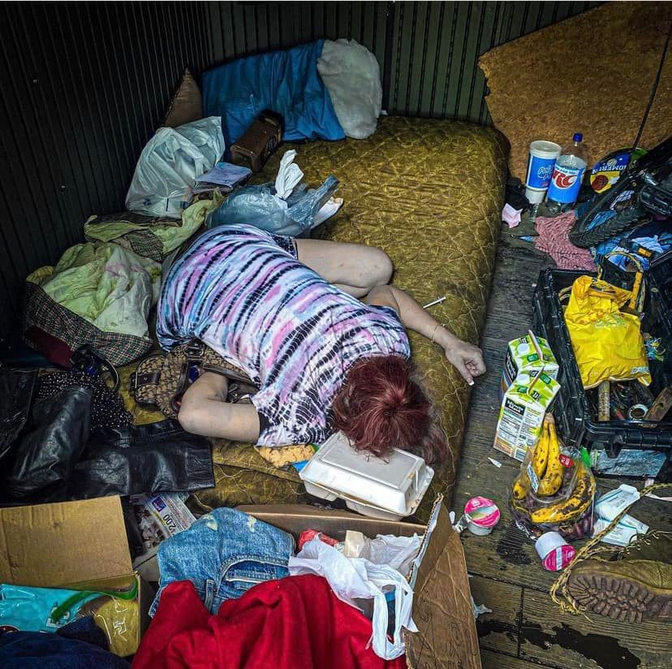

Mobile uploads
WHY DO YOU PUT PICTURES OF THESE PEOPLE ONLINE?
This is a friend of mine passed out after taking a really good hit of fentanyl. The needle is still in her arm.
In our circle we all know who this is. She’s embarrassed by this picture. But she didn’t tell me to take it down.
That’s the one rule I’ve given myself. If a person or their family tell me to take down a photo or video I do it. But sometimes I even debate that.
A person accused me yesterday of exploiting these people for my own political gain. I’m running for city council. And I’ll make a bigger plug for that later in this post.
Why am I doing this?
There are several reasons.
I believe if you don’t see something then it doesn’t exist. If and when they start putting homeless people in concentration camps we all are going to be thankful this woman is no longer in our sight and she’s “getting the help she needs.” Even though we’ll have no earthly idea what is going on behind those walls.
Pictures really impact the human mind. If I just told you the story of this picture it wouldn’t have nearly the impact of being forced to look at her.
And finally and most importantly: I don’t want you to be able to say “I didn’t know it was happening.”
Nazi concentration camps were right outside cities where Germans were carrying on like nothing was happening. This woman is in your community. I feel pretty confident that there is a person right this minute looking a lot like this picture within a mile of your house in Akron Ohio.
I NEVER WANT YOU TO BE ABLE TO SAY YOU DIDN’T KNOW.
Imokhai Okolo is being denied a seat on the police oversight board (that has zero power) by 5 old white men. It’s cut and dry racism. NOW YOU KNOW.
The city of Akron is clear cutting the land at White Pond that they most likely sold illegally to out of town developers. NOW YOU KNOW.
8 cops emptied 8 clips of bullets into one unarmed Black man. NOW YOU KNOW.
WE ARE ALL CULPABLE. We wealthy white people who live blessed, easy lives are propping up a system that exploits and tortures non-wealthy, non-white people because it benefits us.
We buy chocolate and shrimp that was cultivated by child slaves. We buy nearly everything that was made in countries that was made by exploited workers because we don’t want to pay an American to do the work.
WE ARE GUILTY OF ALL THIS.
When I look at this woman I am not embarrassed for her. She suffers great back pain and she can’t get pain drugs from a doctor. So she gets them from the street. I’m embarrassed for myself and the system I greatly benefit from and causes great suffering to countless other people who are not me and my family.
I get nauseous just thinking about going into the city council room. I hate it there. There is real evil in that room. I would MUCH rather be with this woman in this shed.
I’m running for city council because none of our lawsuits worked to allow me to shelter anyone on my private land. Running for office is my next idea on how I maybe can make a difference.
If you don’t want to see pictures of pain and suffering from me anymore CHANGE THE SYSTEM. One way you can do that is to vote for me as Ward 8 Akron City Council on May 2 2023.
#sageforakron8